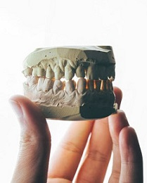
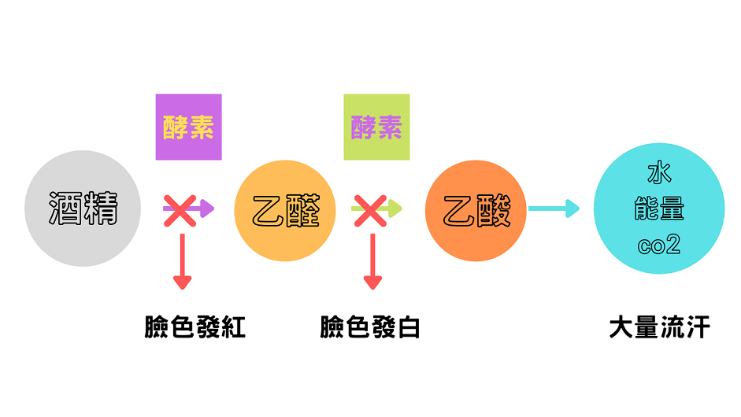
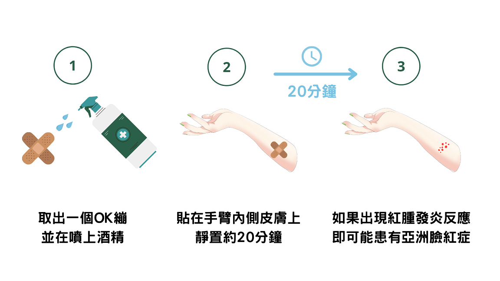

酒精青紅燈
認識亞洲臉紅症
檢測方法
精準健康計畫
酒精青紅燈！你是佗一款？
臉色發紅
臉色發白
大量出汗
不同款的人有不同款的代謝反應！
喝酒臉會紅的人
人稱：“酒後關公”
外部特徵：喝酒時快速臉紅、身體各部位易起酒疹
較不需擔心飲酒過量，但罹患相關疾病風險較高
喝酒臉會白的人
人稱：“白無常”
外部特徵：看起來很能喝但會突然爛醉
僅靠肝臟解酒，最傷肝！
容易飲酒過量導致急性酒精中毒，最好不要喝酒
喝酒會流汗的人
人稱：“酒罈子”
外部特徵：喝酒時會大量出汗
身體代謝酒精能力好
在亞洲是機率只有十萬分之一的天選之人！
除了面色青、紅、白，你若是有款這幾狀況嘛愛注意
酒量雄雄變歹
有些人平常酒量很好，突然變得酒量差，喝一點都有醉的感覺的話，需要特別重視，很可能表示肝臟受損、肝功能下降，不能完全分解酒精代謝物了。這時候需要停止喝酒，養護肝臟。
更多資訊

喙齒敏感鬆動
長期喝酒的人會容易出現這種情況。 如果你的牙齒變黃了很多，吃東西的時候牙齒更敏感不適了， 甚至還有鬆動的情況，很可能牙齒的牙釉質遭到了損壞。
更多資訊
為什麼喝酒會臉紅？
身體就像一台處理機器，酒精會經過腸胃消化道吸收進入血液循環，最後進入肝臟內進行分解代謝反應。 缺乏特定酵素的人沒辦法完整處理酒精， 而無法處理的部分累積在體內，容易造成其他疾病的風險提升。

喝酒臉紅其實是一種警訊。這種人因為基因變異，缺乏一種叫做乙醛去氫酶(Acetaldehyde Dehydrogenase，ALDH2) 的酵素，沒辦法完整代謝的酒精所產生的乙醛，當它在全身亂竄，就會造成皮膚微血管擴張、發癢和不適。
臺灣有將近一半的人缺乏這種酵素，天生不適合飲酒！
因亞洲人先天缺乏這種酵素的的比例遠高於白種人，喝酒後容易出現臉紅、心跳加快、頭痛、頭暈、嘔吐、宿醉等症狀，又稱為「酒精不耐症」或「亞洲臉紅症」。
2015年，美國史丹福大學研究指出，ALDH2基因變異在中國有35％、日本為30％、韓國20％，台灣卻高達47％！意思是每10人就有4~5位有這樣的基因缺陷。
酒量會當訓練？喝酒面紅是肝功能、代謝好？錯！
若是我有亞洲臉紅症，擱繼續喝酒有什麼傷害？
罹患特定癌症的機率比別人高出50倍。研究證實，患有亞洲臉紅症的人，如果每天攝取14克純酒精，也就是大約2杯紅酒的量，罹患口腔癌、食道癌的機率將比正常人高出50倍，同時也會增加大腸癌、中風的機會。
就算無亞洲臉紅症，嘛應該減少喝酒
長期過量飲酒會增加失智風險
根據一項長達23年的追蹤研究發現，只要每週飲酒量超過7罐啤酒，就會有失智的風險
每週多喝3罐，失智風險還會再增加約1.2倍，具有酒精濫用或酒精依賴問題的人，失智症風險甚至會高達2倍。
安怎算是過量？參考國民健康署的「國民飲食指標手冊」建議：
男性：每日喝酒不宜超過一瓶 500 毫升啤酒（約 20 克純酒精）
女性：不宜超過半瓶啤酒（亦即 250 毫升或約 10 克純酒精）
欲安怎知影我甘有亞洲臉紅症？
在家就能做的三步驟簡易測驗

更精準的結果需要去醫院做基因檢測哦!
精準健康：一個由中央研究院推動的計畫
「予囝孫閣較好的治病資源」
報名參加基因檢測，協助我們完善專屬臺灣人的基因庫，為自己和下一代打造更優質的醫療環境。
• 精準用藥
為個人量身打造處方簽，給予適當的劑量，並事先迴避可能產生過敏反應的藥物。
• 提早預防基因性疾病
除了亞洲臉紅症，還有許多疾病都可以透過基因組成診斷，及早得知、即早重視並及早預防，遠勝過治療。
全臺各地都有合作的醫院
截至目前已經有125,374人參與計畫，邀請您一同努力！
現在就查詢您周邊的合作醫院並參與計畫：
https://tpmi.ibms.sinica.edu.tw/www/
歡迎加入精準醫療的行列
姓 名
電子信箱
較常就診醫院
清除
送出
機構
：生物醫學科學研究所
地址
：台北市南港區11529研究院路二段128號
TEL
：(123) 456-7890
E-Mail
：
123@gmail.com